Examples / Sensitivities / sobol
This file is a complete demo of the capability of the sobol function from the CODES toolbox.
Contents
Documentation
The documentation for the sobol class can be found here.
Set rng
Set random number generator seed:
rng(0)
Simple example
Compute sobols:
f=@(x)1/8*prod(3*x.^2+1,2); dim=3; n=1e5; res=CODES.sensitivity.sobol(f,dim,n); disp(res.S1) disp(res.S2) disp(res.St)
X_1 X_2 X_3
Est 1 0.278737 0.272175 0.273971
Est 2 0.271663 0.275556 0.280947
X_1 X_2 X_3
X_1 NaN 0.0600965 0.0550984
X_2 0.0583251 NaN 0.053057
X_3 0.0549634 0.0504917 NaN
X_1 X_2 X_3
Est 1 0.396643 0.394859 0.40047
Est 2 0.384738 0.38854 0.401599
Convergence plot
Compute sensitivity indices and plot the convergence with respect to number of samples used:
f=@(x)1/8*prod(3*x.^2+1,2);
dim=3;
n=1e5;
CODES.sensitivity.sobol(f,dim,n,'conv_seq',linspace(100,n,20));
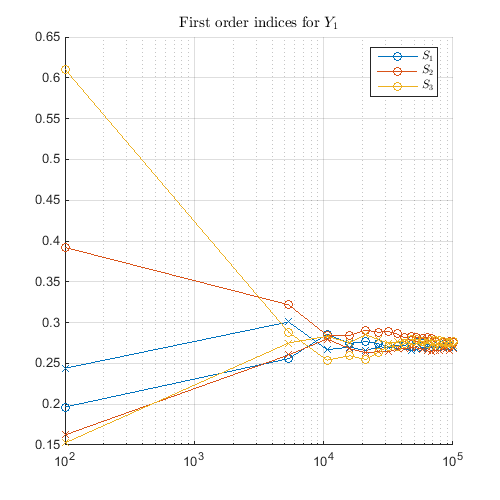 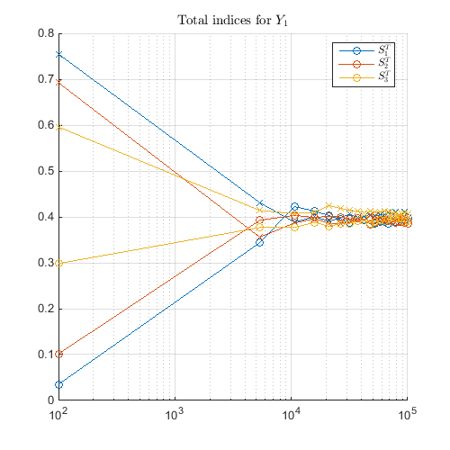 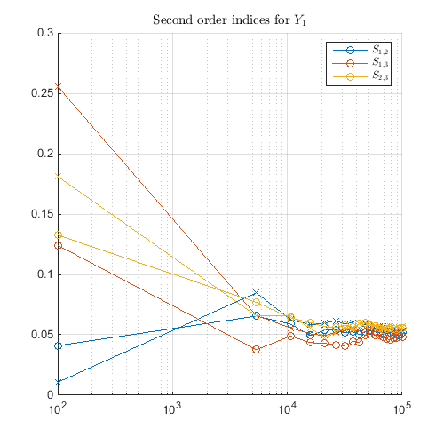 Bar plot
Compute sensitivity indices and plot them:
f=@(x)2*x(:,1)+4*x(:,2)+9*x(:,1).*x(:,2);
dim=3;
n=1e5;
CODES.sensitivity.sobol(f,dim,n,'bar_plot',true);
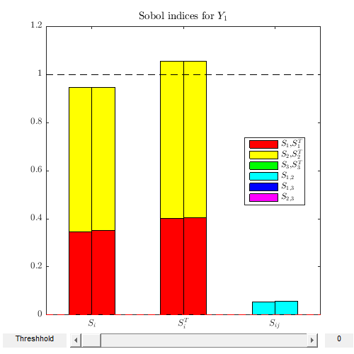 IDF
Let us compare the sensitivities on f where the variables are either uniform between 0 and 1 (default) standard normals:
f=@(x)1/8*prod(3*x.^2+1,2); dim=3; n=1e5; CODES.sensitivity.sobol(f,dim,n,'bar_plot',true); CODES.sensitivity.sobol(f,dim,n,'bar_plot',true,'IDF',@(x)norminv(x));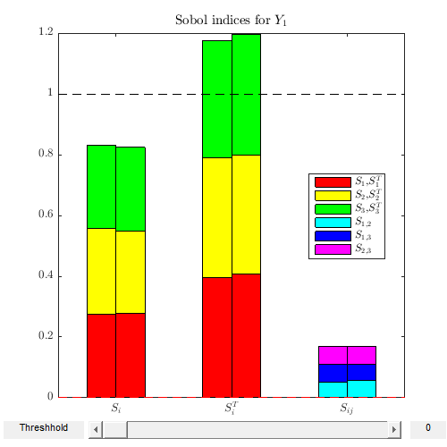 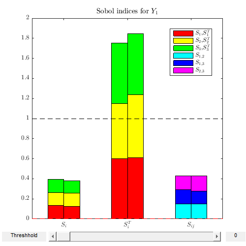
Note the slider in the above figures. It is used to define a value (default 0) below which Sobol' indices can be disregarded. Increasing this value will cause the smallest indices to be removed from the bar plot for increased readability.
Error plot
Compute sensitivity indices and plot them (error) using bootstraped confidence interval. Be mindfull that BCA (that involves Jacknife) can be very heavy for large samples:
f=@(x)1/8*prod(3*x.^2+1,2); dim=3; n=1e4; tic; CODES.sensitivity.sobol(f,dim,n,'err_plot',true,... 'CI_boot',true,'boot_type','bca'); disp(['BCA ' CODES.common.time(toc)])
BCA 28s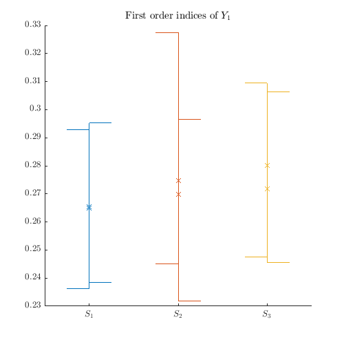 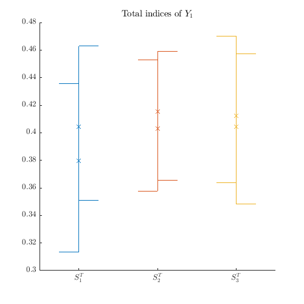 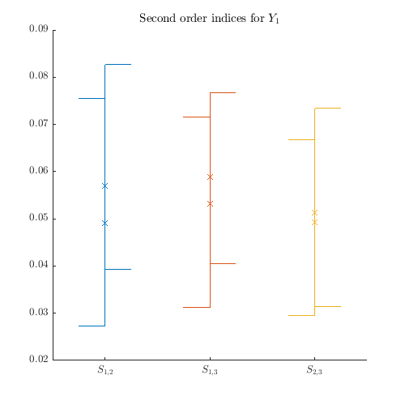
tic; CODES.sensitivity.sobol(f,dim,n,'err_plot',true,... 'CI_boot',true,'boot_type','per'); disp(['Per ' CODES.common.time(toc)])
Per 2s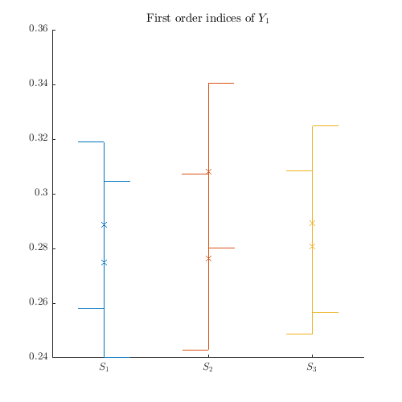 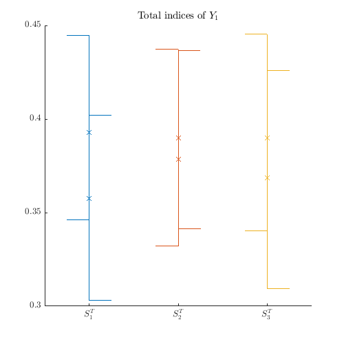 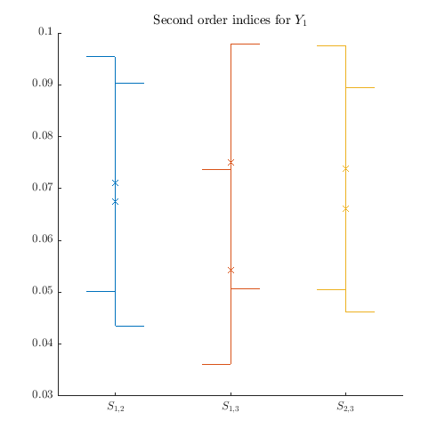
References
- Saltelli (2002): Saltelli A., (2011) Making best use of model evaluations to compute sensitivity indices. Computer Physics Communications 145(2):280-297 - DOI
Copyright © 2015 Computational Optimal Design of Engineering Systems (CODES) Laboratory. University of Arizona.
|
|
Computational Optimal Design of Engineering Systems |

|